国・地域の見分け方
- 車は左側通行
- 公用語は英語
- 一般の乗用車は黄色のナンバープレート
- ドイツ語由来の通り名が見つかる
- ドメインは.na
見つかる標識
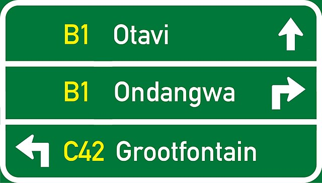
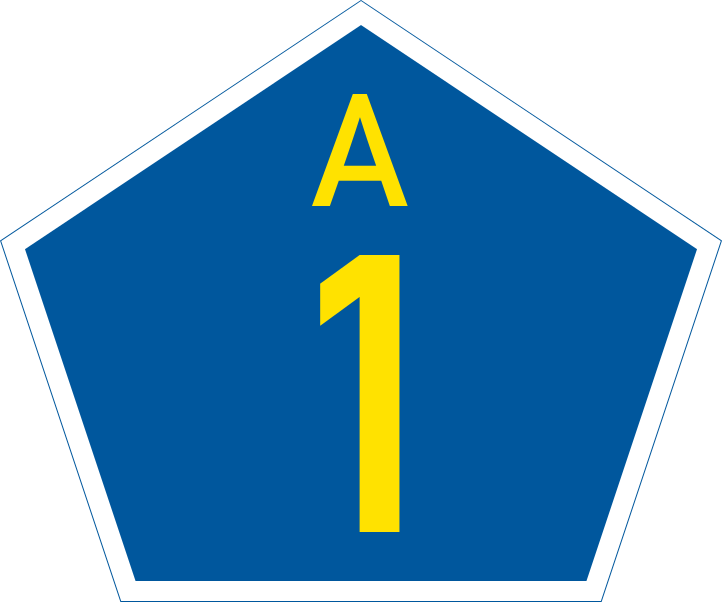
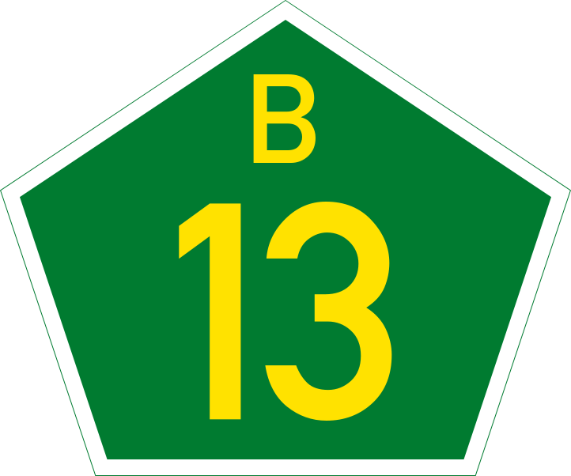
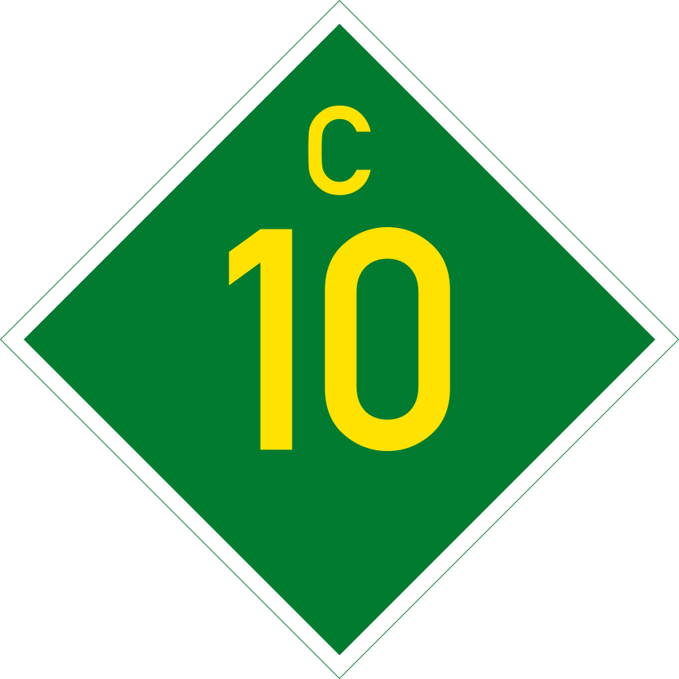
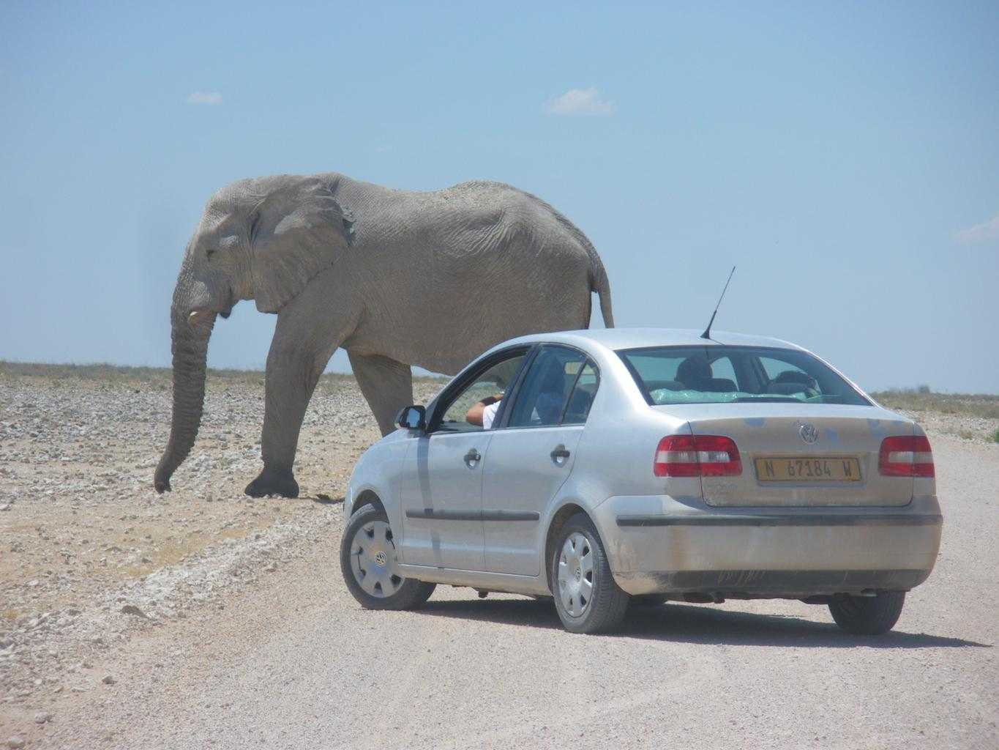

By <a href=“//commons.wikimedia.org/wiki/User:Dickelbers” title=“User:Dickelbers”>Dickelbers - Own work, CC BY-SA 4.0, Link
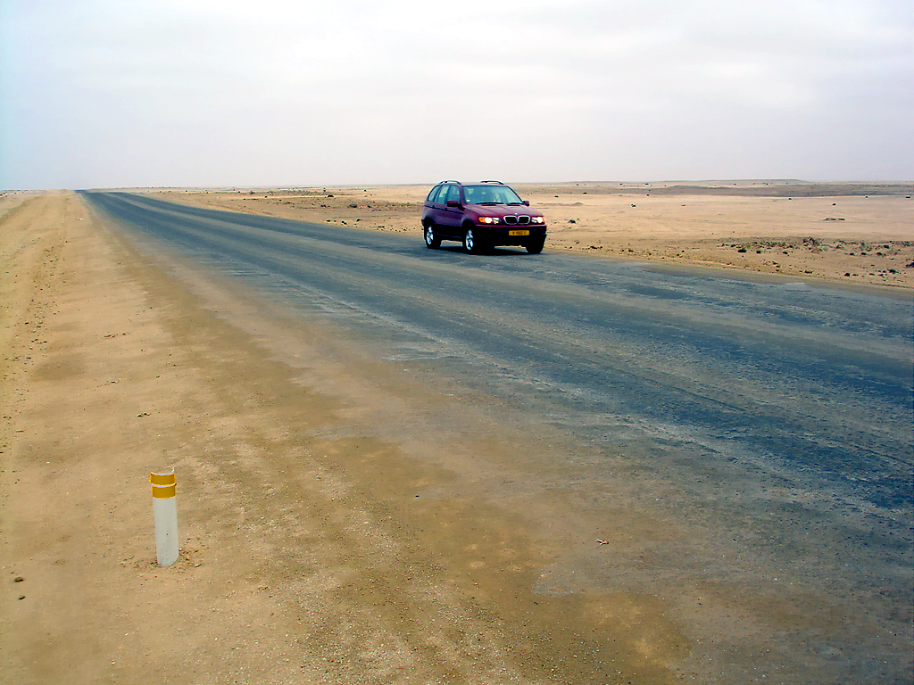
ドイツによる植民地支配を経て、南アフリカ連邦の委任統治下になった。そのためドイツ語の響きがある通り名や地名を見かける。

By Zairon - Own work, CC BY-SA 4.0, Link
人口が少ない割にダイヤモンドやウランのような鉱物資源が豊富なため、都市部では比較的治安が良く家やインフラも整備されている。 Swakopmundなどではドイツの影響を受けた洋風の建築物も残っているという(参考文献 スワコプムント)。
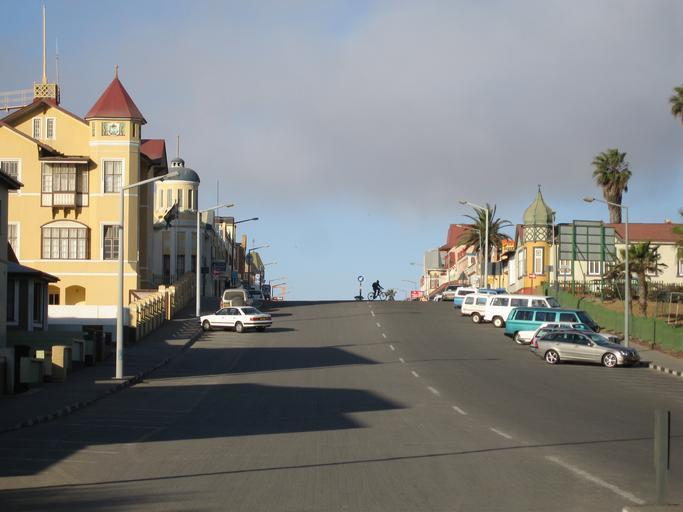
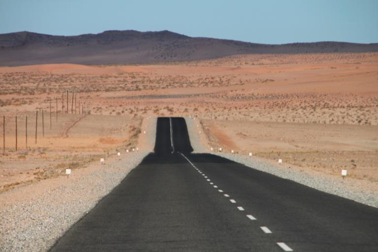
ジニ係数0.58と貧富の差が非常に大きい国(参考文献 対ナミビア共和国 国別援助方針)。都会の中心部には洋風の建物が、郊外の岩山など住みにくい場所にはスラムが広がっている(参考文献 List of slums in Namibia)。
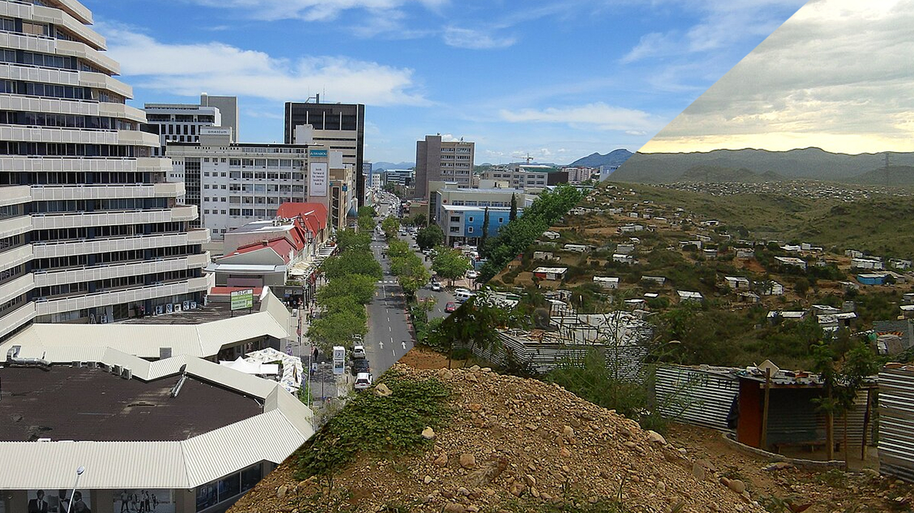
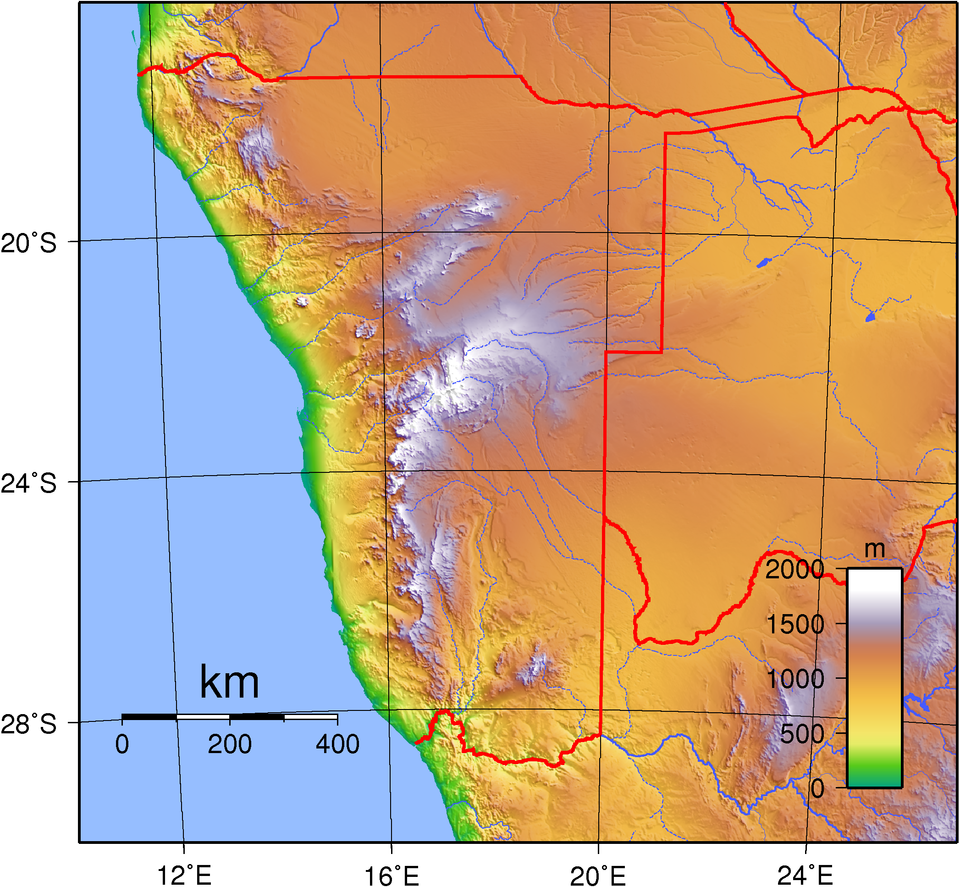
ナミブ砂漠となっている海岸低地を超えると、大急崖帯という山がちなエリアになりここで標高が1000mほど上昇する。ナミビア中央部や標高が上がるエリアではごつごつした岩山も見える。
緑の地域は80%以上、黄緑の地域は地面も目立つ。
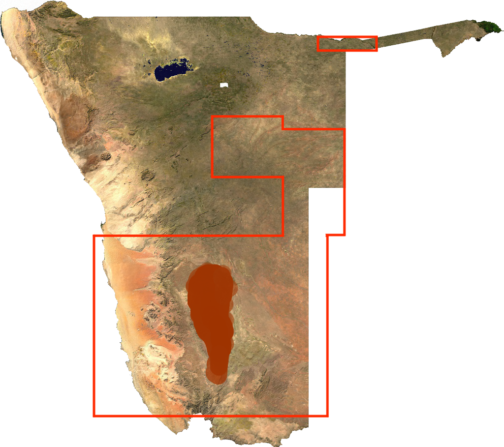
産業
- 最も重要な港であるWalvis Bay、アパルトヘイト終了までの唯一の港だったLüderitz。この２か所を起点にコンテナを輸送するための鉄道が走っている(参考文献 Atlas of Namibia - Transport)。
- 北西部の山脈では銅・亜鉛・ウラン・ゴールドなどさまざまな鉱山が稼働しており、たまに看板がみつかる(参考文献 Atlas of Namibia - Minerals)
最も重要な港であるWalvis Bayを中心に鉄道が走っている(線路は島マップの白黒線)。また、アパルトヘイトが終了しWalvis Bayが編入されるまでナミビア沿岸で大型船が寄れる港はüderitzだけだった。そのため、このふたつの町にはコンテナを輸送するための鉄道が走っていると考えると歴史とともに頭に入りやすい（かも）。

By Htonl - Own work / OpenStreetMap geodata., CC BY-SA 2.0, Link
銅・亜鉛・ウラン・ゴールドなどさまざまなものが産出するが、これらの鉱山はほぼ首都Windhoekより北の西部の山脈にある(参考文献 Atlas of Namibia - Minerals)。道端に鉱山の看板が見つかるかも。
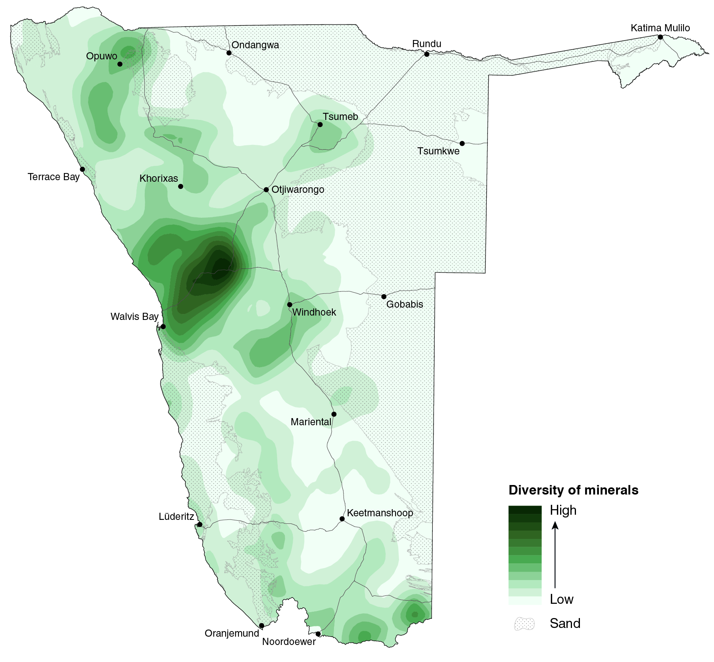
By Atlas of Namibia - Own work, CC BY 4.0, Link
植生
- いわゆる爆発ヤシは北部アンゴラ近くと北西部海沿いに分布する
- Pterocarpus angolensis（アンゴラカリン）は北東のカプリビ回廊沿いに自生する
- Colophospermum mopaneはナミビア北西部にしか生えていない
- Aloe dichotomaは南アフリカ～ナミビア南西部にしか生えていない
- Welwitschiaは北西部にしか生えていないが道端で見つかるかは分からない(参考文献 Welwitschia)
アンゴラカリンは北東のカプリビ回廊沿いの記録が多い(参考文献 pterocarpus angolensis - iNaturalist)。丸く茶色い実のカラのようなものが観察できる。

By Roger Culos - Own work, CC BY-SA 3.0, Link
南アフリカ北西～ナミビア南西部(参考文献 オオジニシキ - iNaturalist)。シルエットから分かりやすいが、生えいている国境沿いに道が少ないため見かけることは少ないかも。
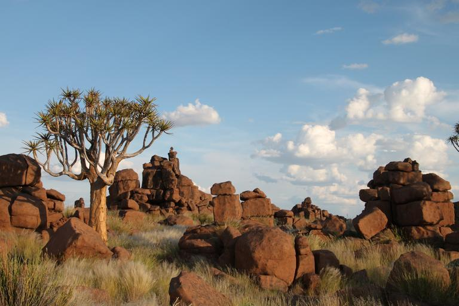
分布エリアは下図の水色点エリアとなる（CC0画像）(参考文献 Aloidendron dichotomum - iNaturalist)。
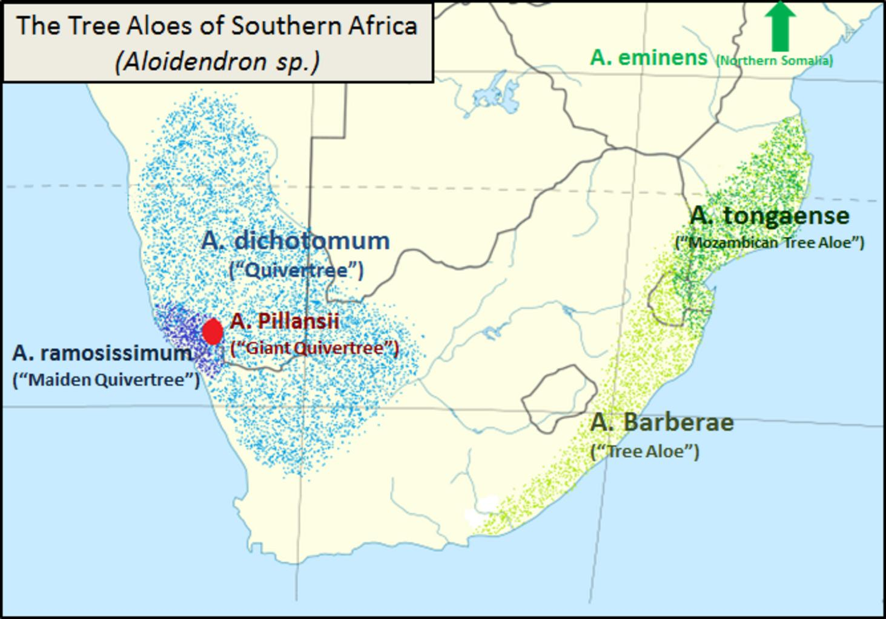
アフリカのアンゴラとナミビアのナミブ砂漠にしか分布していない種で、記録のほとんどは海岸から80km圏内で見つかっている(参考文献 Welwitschia - Kruger National Park)。見かけたらレア。固有種は他にも多く存在する(参考文献 Atlas of Namibia)。
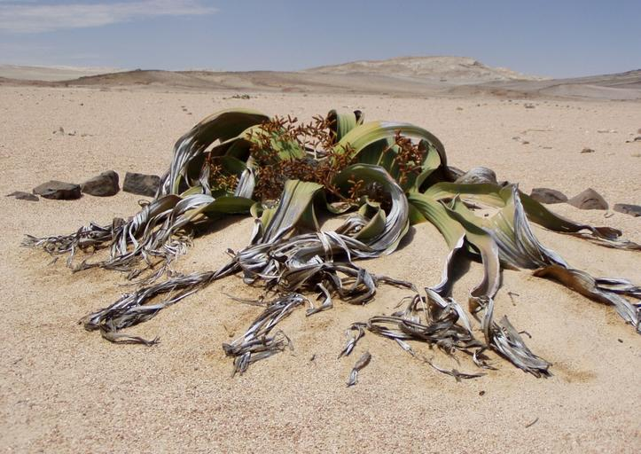
都市・町の絞り込み
Aussenkehrの街並み。周辺には農場が広がっている(参考文献 Aussenkehr)。

ダイヤモンド企業であるデビアスの私有地だった場所であり、古い家は無くインフラもかなり整備されている。
Sossusvleiと呼ばれる観光地へ向かう、高い赤い砂丘に囲まれた平野への道がある(参考文献 Sossusvlei)。衛星写真を見るとSossusvleiへの道だけ平野になっており、周りが砂丘になっていることがわかる。
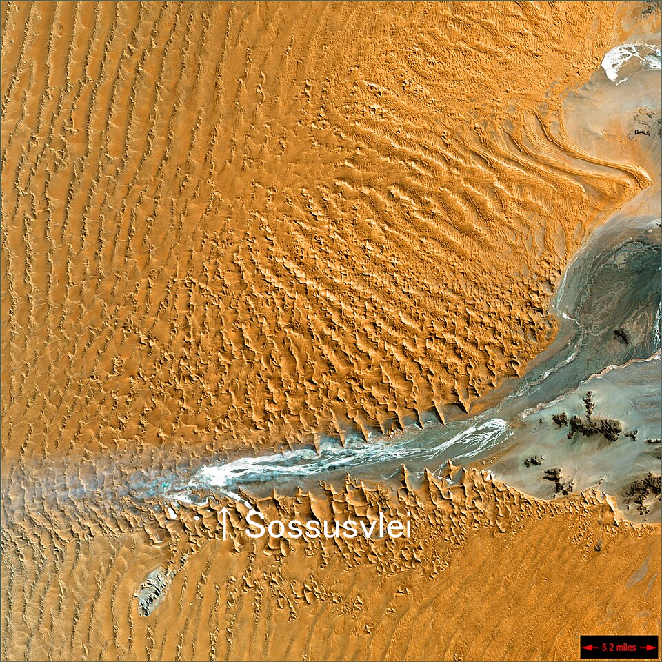